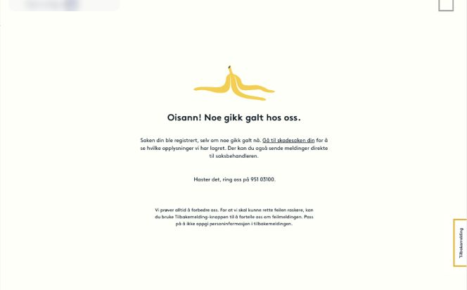

Forsikringsselskap
Digitalisering, automatisering, designsystem og samarbeid på tvers av språk og land.

- Rolle
- Senior og lead interaksjonsdesigner
- Ansvar
- Planlegge og organisere designarbeid. Fagansvarlig på tvers av team. Levere mot produktteam og jobbe tett med forretning, prosess og produkt.
- Varighet
- 3 år +
- År
- 2018–2021
Lead interaksjonsdesigner for løsninger knyttet til det å melde og følge opp skadesaker, både for kunde og saksbehandlere. Jobbet mye med automatisering og at brukeren får tilpasset informasjon og veiledning. Marthe fulgte også opp andre designere, hjalp til i komplekse oppgaver, og deltok i rekruttering og onboarding av nye designere.
Med komplekse datastrukturer i bunn og mange mennesker som jobbet sammen, fikk Marthe god erfaring i å visualisere både prosesser og systemer for å skape godt samarbeid.




Neste prosjektImpact Startup: Studio